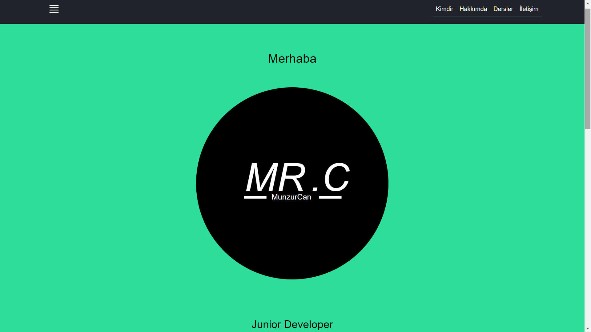
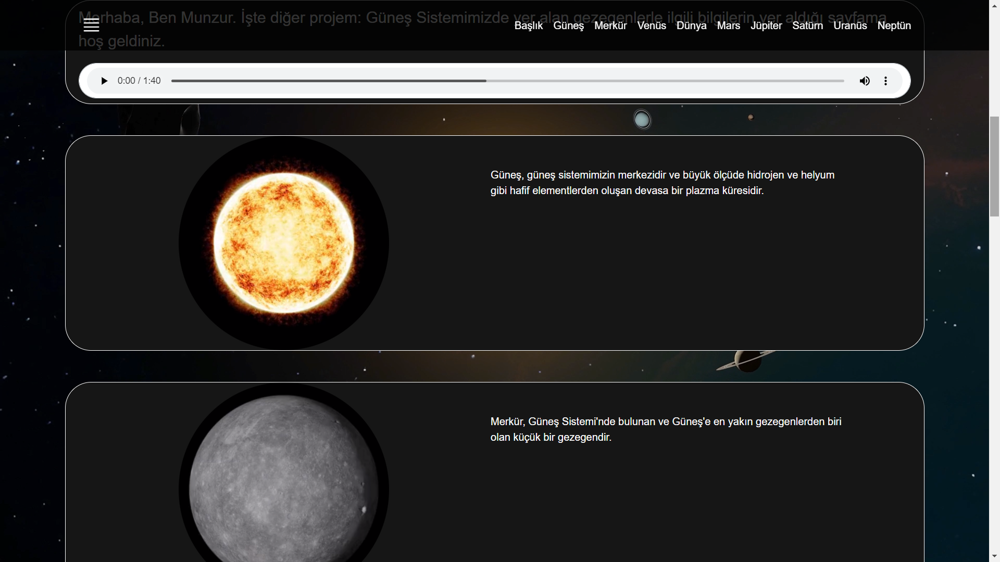
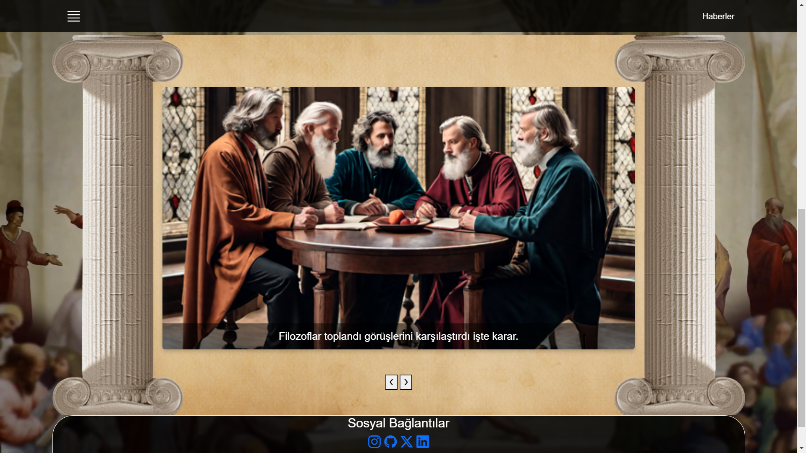

Kişisel Web Sitesi

Güneş Sistemi

Felsefe Ansiklopedisi

8-20. Yüzyıl
20. Yüzyıl - Günümüz
Akımlar
Bağlantılar
İslamiyet Öncesi Dönem
(5 - 10. Yüzyıl)
İslamiyet Etkisi Dönem
(11 - 19. Yüzyıl)
Tanzimat Dönemi
(19. Yüzyıl)
Servet-i Fünun Dönemi
(19-20. Yüzyıl)
Milli Edebiyat Dönemi
(20. Yüzyıl)
Cumhuriyet Dönemi
(20. Yüzyıl - Günümüz)
Garip Anlayışı Şiir
(1941 - 1950)
İkinci Yeni Sonrası
Toplumcu Siir
(1960 - 1980)
Cumhuriyet Döneminde
Halk Şiiri
(1990 - Günümüz)